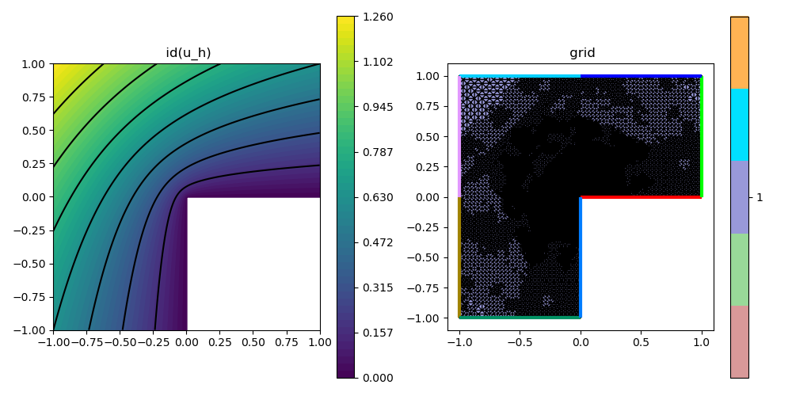

A06 : Local Equilibrated Fluxes 2D
This example computes a local equilibration error estimator for the $H^1$ error of some $H^1$-conforming approximation $u_h$ to the solution $u$ of some Poisson problem $-\Delta u = f$ on an L-shaped domain, i.e.
\[\eta^2(\sigma_h) := \| \sigma_h - \nabla u_h \|^2_{L^2(T)}\]
where $\sigma_h$ discretisates the exact $\sigma$ in the dual mixed problem
\[\sigma - \nabla u = 0 \quad \text{and} \quad \mathrm{div}(\sigma) + f = 0\]
by some local equilibration strategy, see reference below for details.
This examples demonstrates the use of low-level structures to assemble individual problems and a strategy to solve several small problems in parallel by use of non-overlapping node patch groups.
''A posteriori error estimates for efficiency and error control in numerical simulations'' Lecture Notes by M. Vohralik >Link<
module ExampleA06_LocalEquilibratedFluxes2D
using GradientRobustMultiPhysics
using ExtendableGrids
using ExtendableSparse
using GridVisualize
# exact solution u for the Poisson problem
function exact_function!(result,x)
result[1] = atan(x[2],x[1])
if result[1] < 0
result[1] += 2*pi
end
result[1] = sin(2*result[1]/3)
result[1] *= (x[1]^2 + x[2]^2)^(1/3)
end
# everything is wrapped in a main function
function main(; verbosity = 0, order = 2, nlevels = 16, theta = 1//2, Plotter = nothing)
# set log level
set_verbosity(verbosity)
# initial grid
xgrid = grid_lshape(Triangle2D)
# choose some finite elements for primal and dual problem (= for equilibrated fluxes)
# (local equilibration for Pk needs at least BDMk)
if order == 1
FEType = H1P1{1}
FETypeDual = HDIVBDM1{2}
elseif order == 2
FEType = H1P2{1,2}
FETypeDual = HDIVBDM2{2}
else
@error "order must be 1 or 2"
end
# negotiate data functions to the package
u = DataFunction(exact_function!, [1,2]; name = "u", dependencies = "X", bonus_quadorder = 5)
∇u = ∇(u)
# setup Poisson problem
Problem = PoissonProblem()
add_boundarydata!(Problem, 1, [2,3,4,5,6,7], BestapproxDirichletBoundary; data = u)
add_boundarydata!(Problem, 1, [1,8], HomogeneousDirichletBoundary)
# define error estimator : || sigma_h - nabla u_h ||^2_{L^2(T)}
# this can be realised via a kernel function
function eqestimator_kernel(result, input)
# input = [Identity(sigma_h), Divergence(sigma_h), Gradient(u_h)]
result[1] = (input[1] - input[4])^2 + (input[2] - input[5])^2 + input[3]^2
return nothing
end
estimator_action = Action(eqestimator_kernel, [1,5]; name = "estimator kernel", dependencies = "", bonus_quadorder = 3)
EQIntegrator = ItemIntegrator([Identity, Divergence, Gradient],estimator_action)
# setup exact error evaluations
L2Error = L2ErrorIntegrator(u, Identity)
H1Error = L2ErrorIntegrator(∇u, Gradient)
L2ErrorDual = L2ErrorIntegrator(∇u, Identity)
# refinement loop (only uniform for now)
NDofs = zeros(Int, nlevels)
NDofsDual = zeros(Int, nlevels)
Results = zeros(Float64, nlevels, 4)
Solution = nothing
for level = 1 : nlevels
# create a solution vector and solve the problem
FES = FESpace{FEType}(xgrid)
Solution = FEVector(FES)
solve!(Solution, Problem)
NDofs[level] = length(Solution[1])
# evaluate eqilibration error estimator adn append it to Solution vector (for plotting etc.)
DualSolution = get_local_equilibration_estimator(xgrid, Solution, FETypeDual)
NDofsDual[level] = length(DualSolution.entries)
error4cell = zeros(Float64,1,num_sources(xgrid[CellNodes]))
evaluate!(error4cell, EQIntegrator, [DualSolution[1], DualSolution[1], Solution[1]])
if verbosity > 0
println("\n SOLVE LEVEL $level")
println(" ndofs = $(NDofs[level])")
println(" ndofsDual = $(NDofsDual[level])")
end
# calculate L2 error, H1 error, estimator, dual L2 error and write to results
Results[level,1] = sqrt(evaluate(L2Error,Solution[1]))
Results[level,2] = sqrt(evaluate(H1Error,Solution[1]))
Results[level,3] = sqrt(sum(view(error4cell,1,:)))
Results[level,4] = sqrt(evaluate(L2ErrorDual,DualSolution[1]))
if verbosity > 0
println(" ESTIMATE")
println(" estim H1 error = $(Results[level,3])")
println(" exact H1 error = $(Results[level,2])")
println(" dual L2 error = $(Results[level,4])")
end
if level == nlevels
break;
end
# mesh refinement
if theta >= 1
# uniform mesh refinement
xgrid = uniform_refine(xgrid)
else
# adaptive mesh refinement
# refine by red-green-blue refinement (incl. closuring)
facemarker = bulk_mark(xgrid, error4cell[:], theta)
xgrid = RGB_refine(xgrid, facemarker)
end
end
# plot
p=GridVisualizer(; Plotter=Plotter, layout=(2,2), clear = true, resolution=(1000,1000))
scalarplot!(p[1,1], xgrid, view(nodevalues(Solution[1]),1,:), levels=11, title = "u_h")
convergencehistory!(p[1,2], NDofs, Results; add_h_powers = [order,order+1], X_to_h = X -> X.^(-1/2), ylabels = ["|| u - u_h ||", "|| ∇(u - u_h) ||", "η", "|| ∇u - σ_h ||"])
gridplot!(p[2,1], xgrid; linewidth = 1)
gridplot!(p[2,2], xgrid; linewidth = 1, xlimits = [-0.001,0.001], ylimits = [-0.001,0.001])
# print/plot convergence history
print_convergencehistory(NDofs, Results; X_to_h = X -> X.^(-1/2), ylabels = ["|| u - u_h ||", "|| ∇(u - u_h) ||", "η", "|| ∇u - σ_h ||"])
end
# this function computes the local equilibrated fluxes
# by solving local problems on (disjunct group of) node patches
function get_local_equilibration_estimator(xgrid::ExtendableGrid{Tv,Ti}, Solution::FEVector{T,Tv,Ti}, FETypeDual) where {T,Tv,Ti}
# needed grid stuff
xCellNodes::Array{Ti,2} = xgrid[CellNodes]
xCellVolumes::Array{Tv,1} = xgrid[CellVolumes]
xNodeCells::Adjacency{Ti} = atranspose(xCellNodes)
nnodes::Int = num_sources(xNodeCells)
ncells = size(xCellNodes,2)
# get node patch groups that can be solved in parallel
group4node = xgrid[NodePatchGroups]
# init equilibration space (and Lagrange multiplier space)
FESDual = FESpace{FETypeDual}(xgrid)
xItemDofs::Union{VariableTargetAdjacency{Ti},SerialVariableTargetAdjacency{Ti},Array{Ti,2}} = FESDual[CellDofs]
xItemDofs_uh::Union{VariableTargetAdjacency{Ti},SerialVariableTargetAdjacency{Ti},Array{Ti,2}} = Solution[1].FES[CellDofs]
DualSolution = FEVector{T}(FESDual)
# partition of unity and their gradients
POUFEType = H1P1{1}
POUFES = FESpace{POUFEType}(xgrid)
POUqf = QuadratureRule{Tv,Triangle2D}(0)
# quadrature formulas
qf = QuadratureRule{Tv,Triangle2D}(2*get_polynomialorder(FETypeDual, Triangle2D))
weights::Array{Tv,1} = qf.w
# some constants
div_penalty::T = 1e5
bnd_penalty::T = 1e30
maxdofs::Int = max_num_targets_per_source(xItemDofs)
maxdofs_uh::Int = max_num_targets_per_source(xItemDofs_uh)
# redistribute groups for more equilibrated thread load (first groups are larger)
maxgroups = maximum(group4node)
groups = Array{Int,1}(1 : maxgroups)
for j::Int = 1 : floor(maxgroups/2)
a = groups[j]
groups[j] = groups[2*j]
groups[2*j] = a
end
X = Array{Array{T,1},1}(undef,maxgroups)
Threads.@threads for group in groups
grouptime = @elapsed begin
@info " Starting equilibrating patch group $group on thread $(Threads.threadid())... "
# temporary variables
localnode::Int = 0
graduh = zeros(T,2)
gradphi = zeros(Tv,2)
coeffs_uh = zeros(Tv, maxdofs_uh)
eval_i = zeros(Tv,2)
eval_j = zeros(Tv,2)
eval_phi = zeros(Tv,1)
cell::Int = 0
dofi::Int = 0
dofj::Int = 0
weight::Tv = 0
temp::Tv = 0
temp2::Tv = 0
temp3::Tv = 0
Alocal = zeros(Tv,maxdofs,maxdofs)
blocal = zeros(Tv,maxdofs)
# init FEBasiEvaluators
FEE_∇φ = FEEvaluator(POUFES, Gradient, POUqf)
FEE_xref = FEEvaluator(POUFES, Identity, qf)
FEE_∇u = FEEvaluator(Solution[1].FES, Gradient, qf)
FEE_div = FEEvaluator(FESDual, Divergence, qf)
FEE_id = FEEvaluator(FESDual, Identity, qf)
# init system
A = ExtendableSparseMatrix{Tv,Int64}(FESDual.ndofs,FESDual.ndofs)
b = zeros(Tv,FESDual.ndofs)
# find dofs at boundary of current node patches
# and in interior of cells outside of current node patch group
is_noninvolveddof = zeros(Bool,FESDual.ndofs)
outside_cell::Bool = false
for cell = 1 : ncells
outside_cell = true
for k = 1 : 3
if group4node[xCellNodes[k,cell]] == group
outside_cell = false
break
end
end
if (outside_cell) # mark interior dofs of outside cell
for j = 1 : maxdofs
is_noninvolveddof[xItemDofs[j,cell]] = true
end
end
end
for node = 1 : nnodes
if group4node[node] == group
for c = 1 : num_targets(xNodeCells,node)
cell = xNodeCells[c,node]
# find local node number of global node z
# and evaluate (constant) gradient of nodal basis function phi_z
localnode = 1
while xCellNodes[localnode,cell] != node
localnode += 1
end
FEE_∇φ.citem[] = cell
update_basis!(FEE_∇φ)
eval_febe!(gradphi, FEE_∇φ, localnode, 1)
# read coefficients for discrete flux
for j=1:maxdofs_uh
coeffs_uh[j] = Solution[1].entries[xItemDofs_uh[j,cell]]
end
# update other FE evaluators
FEE_∇u.citem[] = cell
FEE_div.citem[] = cell
FEE_id.citem[] = cell
update_basis!(FEE_∇u)
update_basis!(FEE_div)
update_basis!(FEE_id)
# assembly on this cell
for i in eachindex(weights)
weight = weights[i] * xCellVolumes[cell]
# evaluate grad(u_h) and nodal basis function at quadrature point
fill!(graduh,0)
eval_febe!(graduh, FEE_∇u, coeffs_uh, i)
eval_febe!(eval_phi, FEE_xref, localnode, i)
# compute residual -f*phi_z + grad(u_h) * grad(phi_z) at quadrature point i ( f = 0 in this example !!! )
temp2 = div_penalty * sqrt(xCellVolumes[cell]) * weight
temp = temp2*( graduh[1] * gradphi[1] + graduh[2] * gradphi[2] )
for dof_i = 1 : maxdofs
eval_febe!(eval_i, FEE_id, dof_i, i)
eval_i .*= weight
# right-hand side for best-approximation (grad(u_h)*phi)
blocal[dof_i] += (graduh[1]*eval_i[1] + graduh[2]*eval_i[2]) * eval_phi[1]
# mass matrix Hdiv
for dof_j = dof_i : maxdofs
eval_febe!(eval_j, FEE_id, dof_j, i)
Alocal[dof_i,dof_j] += (eval_i[1]*eval_j[1] + eval_i[2]*eval_j[2])
end
# div-div matrix Hdiv * penalty (quick and dirty to avoid Lagrange multiplier)
eval_febe!(eval_i, FEE_div, dof_i, i)
blocal[dof_i] += temp * eval_i[1]
temp3 = temp2 * eval_i[1]
for dof_j = dof_i : maxdofs
eval_febe!(eval_j, FEE_div, dof_j, i)
Alocal[dof_i,dof_j] += temp3*eval_j[1]
end
end
end
# write into global A and b
for dof_i = 1 : maxdofs
dofi = xItemDofs[dof_i,cell]
b[dofi] += blocal[dof_i]
for dof_j = 1 : maxdofs
dofj = xItemDofs[dof_j,cell]
if dof_j < dof_i # use that Alocal is symmetric
_addnz(A,dofi,dofj,Alocal[dof_j,dof_i],1)
else
_addnz(A,dofi,dofj,Alocal[dof_i,dof_j],1)
end
end
end
# reset local A and b
fill!(Alocal,0)
fill!(blocal,0)
end
end
end
# penalize dofs that are not involved
for j = 1 : FESDual.ndofs
if is_noninvolveddof[j]
A[j,j] = bnd_penalty
b[j] = 0
end
end
# solve local problem
X[group] = A\b
end
@info "Finished equilibration patch group $group on thread $(Threads.threadid()) in $(grouptime)s "
end
# write local solutions to global vector
for group = 1 : maxgroups
DualSolution[1].entries .+= X[group]
end
return DualSolution
end
endThis page was generated using Literate.jl.
Default output:
julia> ExampleA06_LocalEquilibratedFluxes2D.main()
┌ Info: ========== Solving Poisson problem ==========
└ Equation (1.1) Poisson equation for u (discretised by H1P2{1,2}, ndofs = 21)
[ Info: overall residual = 1.076401158743041e-15
[ Info: Starting equilibrating patch group 2 on thread 1...
[ Info: Finished equilibration patch group 2 on thread 1 in 0.770953075s
[ Info: Starting equilibrating patch group 1 on thread 1...
[ Info: Finished equilibration patch group 1 on thread 1 in 0.001261309s
[ Info: Starting equilibrating patch group 3 on thread 1...
[ Info: Finished equilibration patch group 3 on thread 1 in 0.001087507s
┌ Info: ========== Solving Poisson problem ==========
└ Equation (1.1) Poisson equation for u (discretised by H1P2{1,2}, ndofs = 43)
[ Info: overall residual = 7.490149483154537e-16
[ Info: Starting equilibrating patch group 2 on thread 1...
[ Info: Finished equilibration patch group 2 on thread 1 in 0.001763112s
[ Info: Starting equilibrating patch group 4 on thread 1...
[ Info: Finished equilibration patch group 4 on thread 1 in 0.002416117s
[ Info: Starting equilibrating patch group 3 on thread 1...
[ Info: Finished equilibration patch group 3 on thread 1 in 0.001560911s
[ Info: Starting equilibrating patch group 1 on thread 1...
[ Info: Finished equilibration patch group 1 on thread 1 in 0.001849113s
[ Info: Starting equilibrating patch group 5 on thread 1...
[ Info: Finished equilibration patch group 5 on thread 1 in 0.000682605s
┌ Info: ========== Solving Poisson problem ==========
└ Equation (1.1) Poisson equation for u (discretised by H1P2{1,2}, ndofs = 71)
[ Info: overall residual = 1.1582757872200162e-15
[ Info: Starting equilibrating patch group 2 on thread 1...
[ Info: Finished equilibration patch group 2 on thread 1 in 0.003581625s
[ Info: Starting equilibrating patch group 4 on thread 1...
[ Info: Finished equilibration patch group 4 on thread 1 in 0.003003921s
[ Info: Starting equilibrating patch group 3 on thread 1...
[ Info: Finished equilibration patch group 3 on thread 1 in 0.003280623s
[ Info: Starting equilibrating patch group 1 on thread 1...
[ Info: Finished equilibration patch group 1 on thread 1 in 0.003267523s
┌ Info: ========== Solving Poisson problem ==========
└ Equation (1.1) Poisson equation for u (discretised by H1P2{1,2}, ndofs = 102)
[ Info: overall residual = 1.8647720633231627e-15
[ Info: Starting equilibrating patch group 2 on thread 1...
[ Info: Finished equilibration patch group 2 on thread 1 in 0.005493239s
[ Info: Starting equilibrating patch group 4 on thread 1...
[ Info: Finished equilibration patch group 4 on thread 1 in 0.003298724s
[ Info: Starting equilibrating patch group 3 on thread 1...
[ Info: Finished equilibration patch group 3 on thread 1 in 0.004574232s
[ Info: Starting equilibrating patch group 1 on thread 1...
[ Info: Finished equilibration patch group 1 on thread 1 in 0.004718233s
[ Info: Starting equilibrating patch group 5 on thread 1...
[ Info: Finished equilibration patch group 5 on thread 1 in 0.001055308s
┌ Info: ========== Solving Poisson problem ==========
└ Equation (1.1) Poisson equation for u (discretised by H1P2{1,2}, ndofs = 155)
[ Info: overall residual = 2.3601421316636806e-15
[ Info: Starting equilibrating patch group 2 on thread 1...
[ Info: Finished equilibration patch group 2 on thread 1 in 0.007455853s
[ Info: Starting equilibrating patch group 4 on thread 1...
[ Info: Finished equilibration patch group 4 on thread 1 in 0.007285251s
[ Info: Starting equilibrating patch group 3 on thread 1...
[ Info: Finished equilibration patch group 3 on thread 1 in 0.00713975s
[ Info: Starting equilibrating patch group 1 on thread 1...
[ Info: Finished equilibration patch group 1 on thread 1 in 0.006132843s
[ Info: Starting equilibrating patch group 5 on thread 1...
[ Info: Finished equilibration patch group 5 on thread 1 in 0.001817913s
┌ Info: ========== Solving Poisson problem ==========
└ Equation (1.1) Poisson equation for u (discretised by H1P2{1,2}, ndofs = 223)
[ Info: overall residual = 3.4615093181808117e-15
[ Info: Starting equilibrating patch group 2 on thread 1...
[ Info: Finished equilibration patch group 2 on thread 1 in 0.009577268s
[ Info: Starting equilibrating patch group 4 on thread 1...
[ Info: Finished equilibration patch group 4 on thread 1 in 0.009410267s
[ Info: Starting equilibrating patch group 3 on thread 1...
[ Info: Finished equilibration patch group 3 on thread 1 in 0.01121298s
[ Info: Starting equilibrating patch group 1 on thread 1...
[ Info: Finished equilibration patch group 1 on thread 1 in 0.009998571s
[ Info: Starting equilibrating patch group 5 on thread 1...
[ Info: Finished equilibration patch group 5 on thread 1 in 0.003241423s
┌ Info: ========== Solving Poisson problem ==========
└ Equation (1.1) Poisson equation for u (discretised by H1P2{1,2}, ndofs = 311)
[ Info: overall residual = 2.5787865303238752e-15
[ Info: Starting equilibrating patch group 2 on thread 1...
[ Info: Finished equilibration patch group 2 on thread 1 in 0.015373709s
[ Info: Starting equilibrating patch group 4 on thread 1...
[ Info: Finished equilibration patch group 4 on thread 1 in 0.012040985s
[ Info: Starting equilibrating patch group 6 on thread 1...
[ Info: Finished equilibration patch group 6 on thread 1 in 0.00136961s
[ Info: Starting equilibrating patch group 1 on thread 1...
[ Info: Finished equilibration patch group 1 on thread 1 in 0.014432603s
[ Info: Starting equilibrating patch group 5 on thread 1...
[ Info: Finished equilibration patch group 5 on thread 1 in 0.003352824s
[ Info: Starting equilibrating patch group 3 on thread 1...
[ Info: Finished equilibration patch group 3 on thread 1 in 0.015299309s
┌ Info: ========== Solving Poisson problem ==========
└ Equation (1.1) Poisson equation for u (discretised by H1P2{1,2}, ndofs = 426)
[ Info: overall residual = 2.848057451571805e-15
[ Info: Starting equilibrating patch group 2 on thread 1...
[ Info: Finished equilibration patch group 2 on thread 1 in 0.020035542s
[ Info: Starting equilibrating patch group 4 on thread 1...
[ Info: Finished equilibration patch group 4 on thread 1 in 0.016464816s
[ Info: Starting equilibrating patch group 3 on thread 1...
[ Info: Finished equilibration patch group 3 on thread 1 in 0.021987056s
[ Info: Starting equilibrating patch group 1 on thread 1...
[ Info: Finished equilibration patch group 1 on thread 1 in 0.020673446s
[ Info: Starting equilibrating patch group 5 on thread 1...
[ Info: Finished equilibration patch group 5 on thread 1 in 0.005011136s
┌ Info: ========== Solving Poisson problem ==========
└ Equation (1.1) Poisson equation for u (discretised by H1P2{1,2}, ndofs = 482)
[ Info: overall residual = 3.788347624115556e-15
[ Info: Starting equilibrating patch group 2 on thread 1...
[ Info: Finished equilibration patch group 2 on thread 1 in 0.023066163s
[ Info: Starting equilibrating patch group 4 on thread 1...
[ Info: Finished equilibration patch group 4 on thread 1 in 0.017888827s
[ Info: Starting equilibrating patch group 6 on thread 1...
[ Info: Finished equilibration patch group 6 on thread 1 in 0.002262516s
[ Info: Starting equilibrating patch group 1 on thread 1...
[ Info: Finished equilibration patch group 1 on thread 1 in 0.023039863s
[ Info: Starting equilibrating patch group 5 on thread 1...
[ Info: Finished equilibration patch group 5 on thread 1 in 0.005915642s
[ Info: Starting equilibrating patch group 3 on thread 1...
[ Info: Finished equilibration patch group 3 on thread 1 in 0.024731676s
┌ Info: ========== Solving Poisson problem ==========
└ Equation (1.1) Poisson equation for u (discretised by H1P2{1,2}, ndofs = 544)
[ Info: overall residual = 2.883661505289226e-15
[ Info: Starting equilibrating patch group 2 on thread 1...
[ Info: Finished equilibration patch group 2 on thread 1 in 0.026197186s
[ Info: Starting equilibrating patch group 4 on thread 1...
[ Info: Finished equilibration patch group 4 on thread 1 in 0.021299551s
[ Info: Starting equilibrating patch group 6 on thread 1...
[ Info: Finished equilibration patch group 6 on thread 1 in 0.001470011s
[ Info: Starting equilibrating patch group 1 on thread 1...
[ Info: Finished equilibration patch group 1 on thread 1 in 0.025685082s
[ Info: Starting equilibrating patch group 5 on thread 1...
[ Info: Finished equilibration patch group 5 on thread 1 in 0.007358852s
[ Info: Starting equilibrating patch group 3 on thread 1...
[ Info: Finished equilibration patch group 3 on thread 1 in 0.027762497s
┌ Info: ========== Solving Poisson problem ==========
└ Equation (1.1) Poisson equation for u (discretised by H1P2{1,2}, ndofs = 633)
[ Info: overall residual = 3.4821775824788666e-15
[ Info: Starting equilibrating patch group 2 on thread 1...
[ Info: Finished equilibration patch group 2 on thread 1 in 0.031640825s
[ Info: Starting equilibrating patch group 4 on thread 1...
[ Info: Finished equilibration patch group 4 on thread 1 in 0.025899783s
[ Info: Starting equilibrating patch group 6 on thread 1...
[ Info: Finished equilibration patch group 6 on thread 1 in 0.00146741s
[ Info: Starting equilibrating patch group 1 on thread 1...
[ Info: Finished equilibration patch group 1 on thread 1 in 0.029069506s
[ Info: Starting equilibrating patch group 5 on thread 1...
[ Info: Finished equilibration patch group 5 on thread 1 in 0.009626368s
[ Info: Starting equilibrating patch group 3 on thread 1...
[ Info: Finished equilibration patch group 3 on thread 1 in 0.030114114s
┌ Info: ========== Solving Poisson problem ==========
└ Equation (1.1) Poisson equation for u (discretised by H1P2{1,2}, ndofs = 680)
[ Info: overall residual = 2.6371249832590144e-15
[ Info: Starting equilibrating patch group 2 on thread 1...
[ Info: Finished equilibration patch group 2 on thread 1 in 0.033201536s
[ Info: Starting equilibrating patch group 4 on thread 1...
[ Info: Finished equilibration patch group 4 on thread 1 in 0.027537795s
[ Info: Starting equilibrating patch group 6 on thread 1...
[ Info: Finished equilibration patch group 6 on thread 1 in 0.002257716s
[ Info: Starting equilibrating patch group 1 on thread 1...
[ Info: Finished equilibration patch group 1 on thread 1 in 0.031222521s
[ Info: Starting equilibrating patch group 5 on thread 1...
[ Info: Finished equilibration patch group 5 on thread 1 in 0.010463174s
[ Info: Starting equilibrating patch group 3 on thread 1...
[ Info: Finished equilibration patch group 3 on thread 1 in 0.033482538s
┌ Info: ========== Solving Poisson problem ==========
└ Equation (1.1) Poisson equation for u (discretised by H1P2{1,2}, ndofs = 751)
[ Info: overall residual = 3.0352572594290533e-15
[ Info: Starting equilibrating patch group 2 on thread 1...
[ Info: Finished equilibration patch group 2 on thread 1 in 0.037095164s
[ Info: Starting equilibrating patch group 4 on thread 1...
[ Info: Finished equilibration patch group 4 on thread 1 in 0.032067228s
[ Info: Starting equilibrating patch group 6 on thread 1...
[ Info: Finished equilibration patch group 6 on thread 1 in 0.002295016s
[ Info: Starting equilibrating patch group 1 on thread 1...
[ Info: Finished equilibration patch group 1 on thread 1 in 0.034704547s
[ Info: Starting equilibrating patch group 5 on thread 1...
[ Info: Finished equilibration patch group 5 on thread 1 in 0.010264973s
[ Info: Starting equilibrating patch group 3 on thread 1...
[ Info: Finished equilibration patch group 3 on thread 1 in 0.036762261s
┌ Info: ========== Solving Poisson problem ==========
└ Equation (1.1) Poisson equation for u (discretised by H1P2{1,2}, ndofs = 918)
[ Info: overall residual = 2.8732806571833326e-15
[ Info: Starting equilibrating patch group 2 on thread 1...
[ Info: Finished equilibration patch group 2 on thread 1 in 0.044722018s
[ Info: Starting equilibrating patch group 4 on thread 1...
[ Info: Finished equilibration patch group 4 on thread 1 in 0.036066656s
[ Info: Starting equilibrating patch group 6 on thread 1...
[ Info: Finished equilibration patch group 6 on thread 1 in 0.003291523s
[ Info: Starting equilibrating patch group 1 on thread 1...
[ Info: Finished equilibration patch group 1 on thread 1 in 0.043236007s
[ Info: Starting equilibrating patch group 5 on thread 1...
[ Info: Finished equilibration patch group 5 on thread 1 in 0.014106001s
[ Info: Starting equilibrating patch group 3 on thread 1...
[ Info: Finished equilibration patch group 3 on thread 1 in 0.044346015s
┌ Info: ========== Solving Poisson problem ==========
└ Equation (1.1) Poisson equation for u (discretised by H1P2{1,2}, ndofs = 957)
[ Info: overall residual = 2.586707304075587e-15
[ Info: Starting equilibrating patch group 2 on thread 1...
[ Info: Finished equilibration patch group 2 on thread 1 in 0.046698832s
[ Info: Starting equilibrating patch group 4 on thread 1...
[ Info: Finished equilibration patch group 4 on thread 1 in 0.036862162s
[ Info: Starting equilibrating patch group 6 on thread 1...
[ Info: Finished equilibration patch group 6 on thread 1 in 0.003240023s
[ Info: Starting equilibrating patch group 1 on thread 1...
[ Info: Finished equilibration patch group 1 on thread 1 in 0.077322149s
[ Info: Starting equilibrating patch group 5 on thread 1...
[ Info: Finished equilibration patch group 5 on thread 1 in 0.014894005s
[ Info: Starting equilibrating patch group 3 on thread 1...
[ Info: Finished equilibration patch group 3 on thread 1 in 0.04647963s
┌ Info: ========== Solving Poisson problem ==========
└ Equation (1.1) Poisson equation for u (discretised by H1P2{1,2}, ndofs = 992)
[ Info: overall residual = 2.9890322313359087e-15
[ Info: Starting equilibrating patch group 2 on thread 1...
[ Info: Finished equilibration patch group 2 on thread 1 in 0.048099942s
[ Info: Starting equilibrating patch group 4 on thread 1...
[ Info: Finished equilibration patch group 4 on thread 1 in 0.038209071s
[ Info: Starting equilibrating patch group 6 on thread 1...
[ Info: Finished equilibration patch group 6 on thread 1 in 0.003325224s
[ Info: Starting equilibrating patch group 1 on thread 1...
[ Info: Finished equilibration patch group 1 on thread 1 in 0.047264036s
[ Info: Starting equilibrating patch group 5 on thread 1...
[ Info: Finished equilibration patch group 5 on thread 1 in 0.016210316s
[ Info: Starting equilibrating patch group 3 on thread 1...
[ Info: Finished equilibration patch group 3 on thread 1 in 0.048534845s
ndofs | || u - u_h || order | || ∇(u - u_h) || order | η order | || ∇u - σ_h || order |
============|==========================|==========================|==========================|==========================|
21 | 2.513e-02 0.00 | 2.076e-01 0.00 | 2.530e-01 0.00 | 1.278e-01 0.00 |
43 | 3.888e-01 -7.64 | 1.722e+00 -5.90 | 1.746e+00 -5.39 | 2.804e-01 -2.19 |
71 | 4.498e-01 -0.58 | 2.589e+00 -1.63 | 2.677e+00 -1.70 | 6.774e-01 -3.52 |
102 | 4.894e-01 -0.46 | 3.827e+00 -2.16 | 3.882e+00 -2.05 | 6.694e-01 0.07 |
155 | 5.940e-01 -0.93 | 4.461e+00 -0.73 | 6.404e+00 -2.39 | 3.842e+00 -8.35 |
223 | 6.516e-01 -0.51 | 5.170e+00 -0.81 | 8.829e+00 -1.77 | 5.130e+00 -1.59 |
311 | 6.703e-01 -0.17 | 6.212e+00 -1.10 | 7.345e+00 1.11 | 3.737e+00 1.90 |
426 | 6.891e-01 -0.18 | 7.640e+00 -1.31 | 1.348e+01 -3.86 | 3.631e+00 0.18 |
482 | 7.004e-01 -0.26 | 7.894e+00 -0.53 | 4.045e+01 -17.79 | 3.522e+00 0.49 |
544 | 7.092e-01 -0.21 | 8.232e+00 -0.69 | 1.908e+01 12.42 | 3.327e+00 0.94 |
633 | 7.790e-01 -1.24 | 8.987e+00 -1.16 | 1.778e+01 0.93 | 3.518e+00 -0.74 |
680 | 7.881e-01 -0.33 | 8.818e+00 0.53 | 4.926e+01 -28.45 | 5.315e+00 -11.52 |
751 | 7.928e-01 -0.12 | 9.276e+00 -1.02 | 1.286e+01 27.05 | 4.399e+00 3.81 |
918 | 7.685e-01 0.31 | 1.017e+01 -0.91 | 9.961e+01 -20.39 | 4.333e+00 0.15 |
957 | 8.289e-01 -3.64 | 1.136e+01 -5.32 | 2.631e+02 -46.68 | 3.539e+00 9.74 |
992 | 8.670e-01 -2.50 | 1.111e+01 1.22 | 1.825e+02 20.35 | 3.174e+00 6.06 |